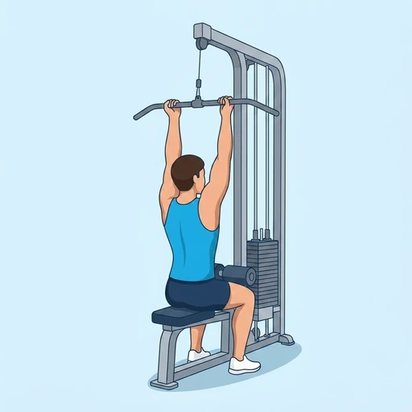

Reverse Grip Lat Pulldown
A lat pulldown variation using an underhand grip that increases biceps involvement.
Back · Cable Machine · Intermediate


Muscles worked by the Reverse Grip Lat Pulldown
Primary
Secondary
Also called: bicep, biceps brachii, biceps muscle, guns, lats, lat.
Equipment
Also called: cable pulley, functional trainer, cable crossover, cable column, cable station, pulley machine.
How to do the Reverse Grip Lat Pulldown
- Attach a straight bar to a lat pulldown machine.
- Grip the bar with an underhand grip, shoulder-width apart.
- Sit and secure your thighs under the pad.
- Pull the bar down to your upper chest.
- Squeeze your lats and biceps at the bottom.
- Return the bar to the starting position with control.
- Repeat for the desired number of reps.
Form tips
- Keep your chest up and avoid leaning back excessively.
- Pull with your elbows, not just your hands.
- Squeeze your lats at the bottom of the movement.
At a glance
| Body part | Back |
|---|---|
| Category | Strength |
| Force type | Pull |
| Mechanic | Compound |
| Difficulty | Intermediate |
| Equipment | Cable Machine |
| Goals | Hypertrophy, Strength |
| Tags | Lower back safe, Knee safe, No axial load, Shoulder safe |
| MET | 6.0 (metabolic equivalent, for calorie estimates) |
| Unilateral | No |
| Bodyweight | No |
| Dataset id | reverse-grip-lat-pulldown |
Reverse Grip Lat Pulldown in German & Spanish
| German | Latzug im Untergriff |
|---|---|
| Spanish | Jalón al Pecho Agarre Supino |
Descriptions, instructions and tips ship in all three languages in the JSON.
Related exercises
Exercise data (JSON)
The record below is exactly what exercises.json ships for this exercise — names, descriptions, instructions and tips in English, German and Spanish.
{
"id": "reverse-grip-lat-pulldown",
"name_en": "Reverse Grip Lat Pulldown",
"name_de": "Latzug im Untergriff",
"name_es": "Jalón al Pecho Agarre Supino",
"description_en": "A lat pulldown variation using an underhand grip that increases biceps involvement.",
"description_de": "Eine Latzug-Variante im Untergriff, die den Bizeps stärker mit einbezieht.",
"description_es": "Una variante del jalón al pecho con agarre supino que aumenta la participación del bíceps.",
"category": "strength",
"force_type": "pull",
"mechanic": "compound",
"difficulty": "intermediate",
"equipment": "cable",
"body_part": "back",
"primary_muscles": [
"biceps_brachii",
"latissimus_dorsi"
],
"secondary_muscles": [
"posterior_deltoid",
"rhomboids"
],
"goals": [
"hypertrophy",
"strength"
],
"tags": [
"lower_back_safe",
"knee_safe",
"no_axial_load",
"shoulder_safe"
],
"variation_group": "pull-up",
"is_unilateral": false,
"is_bodyweight": false,
"instructions_en": [
"Attach a straight bar to a lat pulldown machine.",
"Grip the bar with an underhand grip, shoulder-width apart.",
"Sit and secure your thighs under the pad.",
"Pull the bar down to your upper chest.",
"Squeeze your lats and biceps at the bottom.",
"Return the bar to the starting position with control.",
"Repeat for the desired number of reps."
],
"instructions_de": [
"Befestige eine gerade Stange am Latzuggerät.",
"Greife die Stange im Untergriff, schulterbreit.",
"Setze dich und sichere deine Oberschenkel unter dem Polster.",
"Ziehe die Stange bis zur oberen Brust herunter.",
"Spanne Latissimus und Bizeps am unteren Punkt an.",
"Führe die Stange kontrolliert zur Ausgangsposition zurück.",
"Wiederhole für die gewünschte Anzahl an Wiederholungen."
],
"instructions_es": [
"Coloca una barra recta en una máquina de jalón al pecho.",
"Sujeta la barra con agarre supino, al ancho de los hombros.",
"Siéntate y asegura tus muslos bajo la almohadilla.",
"Tira de la barra hacia la parte superior del pecho.",
"Contrae el dorsal y el bíceps en la parte baja.",
"Vuelve la barra a la posición inicial con control.",
"Repite el número de repeticiones deseado."
],
"tips_en": [
"Keep your chest up and avoid leaning back excessively.",
"Pull with your elbows, not just your hands.",
"Squeeze your lats at the bottom of the movement."
],
"tips_de": [
"Halte die Brust aufrecht und lehne dich nicht übermäßig zurück.",
"Ziehe mit den Ellbogen, nicht nur mit den Händen.",
"Spanne den Latissimus am unteren Punkt der Bewegung an."
],
"tips_es": [
"Mantén el pecho erguido y evita inclinarte demasiado hacia atrás.",
"Tira con los codos, no solo con las manos.",
"Contrae el dorsal en la parte baja del movimiento."
],
"met": 6.0,
"images": {
"flat": {
"start": "images/flat/reverse-grip-lat-pulldown-start.webp",
"peak": "images/flat/reverse-grip-lat-pulldown-peak.webp"
}
}
}Fetch just this exercise
const { exercises } = await fetch(
"https://exercise-dataset.com/exercises.json"
).then(r => r.json());
const ex = exercises.find(e => e.id === "reverse-grip-lat-pulldown");Free for personal and commercial in-app use with attribution (“Exercise data by RepDB”) — see the license and ready-made attribution snippets. Redistributing the data as a dataset or API is not permitted.